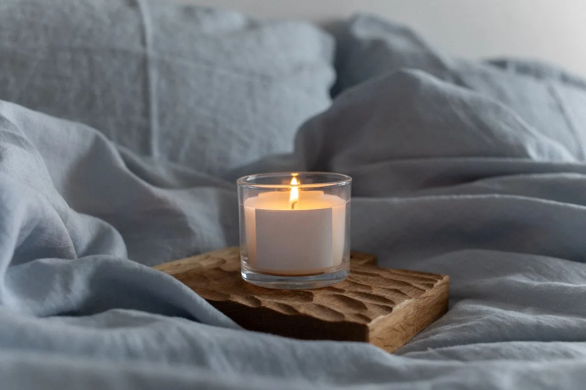

Cremación
Una alternativa de despedida con un acompañamiento respetuoso.
Consultar ↗CONTIGO, EN CADA PASO
Con respeto, dignidad y calidez.
Servicios funerarios y cremación en Ciudad de México y Estado de México. Estamos aquí para escucharte y orientarte, a cualquier hora.
Atención personalizada las 24 horas
Un acompañamiento humano.
La tranquilidad de estar acompañado.
NUESTROS SERVICIOS
Te orientamos para elegir una despedida digna, de acuerdo con tus necesidades y las de tu familia.
Una alternativa de despedida con un acompañamiento respetuoso.
Consultar ↗Orientación y atención para una despedida digna.
Consultar ↗Acompañamiento para despedir a tu ser querido.
Consultar ↗Consulta las opciones y requisitos para este servicio.
Consultar ↗Te orientamos sobre las opciones para tu ubicación.
Consultar ↗OPCIONES CLARAS PARA TU FAMILIA
Conoce qué incluye cada paquete y habla con nosotros para recibir orientación.
$10,000MXN
Certificado de defunción · Lugar en panteón · Embalsamado
$15,000MXN
Florería · Cafetería · Servicio religioso
$20,000MXN
Certificado de defunción
Precios en pesos mexicanos. Confirma con un asesor la disponibilidad y el alcance del servicio para tu ubicación.
CADA DETALLE CUENTA
Complementa la atención con los servicios que tu familia necesite.
Consultar disponibilidad y precio ↗NO TIENES QUE RESOLVERLO A SOLAS
Llámanos o escríbenos por WhatsApp, a cualquier hora.
Cuéntanos dónde se encuentra la persona fallecida.
Te explicamos las opciones disponibles y resolvemos tus dudas.
Selecciona la opción que mejor responda a tus necesidades.
Te acompañamos en los siguientes pasos de la contratación.
LA CALIDEZ DE ESTAR PRESENTES
En un momento difícil, una atención cercana hace la diferencia. Escuchamos a cada familia con respeto y ofrecemos orientación personalizada.
Información clara para ayudarte a dar el siguiente paso.
Cuidado y respeto en cada detalle del servicio.
Un trato sensible, atento a lo que tú y tu familia necesitan.
CERCA DE TU FAMILIA
Brindamos orientación para servicios funerarios en Ciudad de México y Estado de México, incluyendo Coacalco, Ecatepec, Tultitlán y Tultepec.
Compártenos tu ubicación para consultar las opciones disponibles.
Consultar cobertura ↗SERENIDAD EN CADA DETALLE
Una despedida merece cuidado y respeto.
Imágenes de referencia; no representan instalaciones propias.

ESTAMOS PARA ORIENTARTE
Si necesitas más información, estamos a una llamada de distancia.
Hablar con un asesor ↗Sí. Puedes contactarnos las 24 horas, los 7 días de la semana, por teléfono o WhatsApp.
Ciudad de México y Estado de México, incluyendo Coacalco, Ecatepec, Tultitlán y Tultepec. Comparte tu ubicación para consultar las opciones disponibles.
Depende del paquete que elijas. En esta página puedes consultar los precios, inclusiones y exclusiones de Bronce, Plata y Oro. Te orientamos antes de contratar.
Contáctanos e indícanos la ubicación de la persona fallecida y el servicio que necesitas. Un asesor te orientará sobre los documentos y trámites aplicables a tu caso.
Ofrecemos ambas opciones. Podemos orientarte sobre su alcance y los paquetes disponibles para que elijas de acuerdo con las preferencias de tu familia.
Sí. La contratación puede cerrarse por teléfono o WhatsApp; no es obligatorio acudir físicamente. Se requiere anticipo.
Se acepta efectivo, transferencia y tarjeta mediante TPV. Existe la posibilidad de pagos a plazos o financiamiento; consulta condiciones con un asesor.
Bronce y Oro no incluyen certificado de defunción. Para Plata, consulta este punto con un asesor antes de contratar.
Sí. Puedes consultar certificado médico, florería, cafetería, servicio religioso, autobús de acompañamiento y noche extra de velación. La disponibilidad y el precio se confirman por contacto directo.
TESTIMONIOS
ESTAMOS AQUÍ PARA TI
No tienes que tener todas las respuestas.
Da el primer paso y cuéntanos cómo podemos ayudarte.
Atención 24 horas · 7 días a la semana
Escribir por WhatsApp ↗Esta es una presentación del sitio de Excelencia Funeraria. El aviso de privacidad definitivo está pendiente de validación por el responsable del negocio. Sustituir este texto antes de activar la captación formal de datos.
En esta versión, los datos del formulario se incorporan a un mensaje de WhatsApp que puedes revisar antes de enviar. La página no guarda esos datos. No incluyas documentos, datos médicos ni información sensible. Para consultas sobre el tratamiento de tus datos, contacta al número de atención de Excelencia Funeraria.